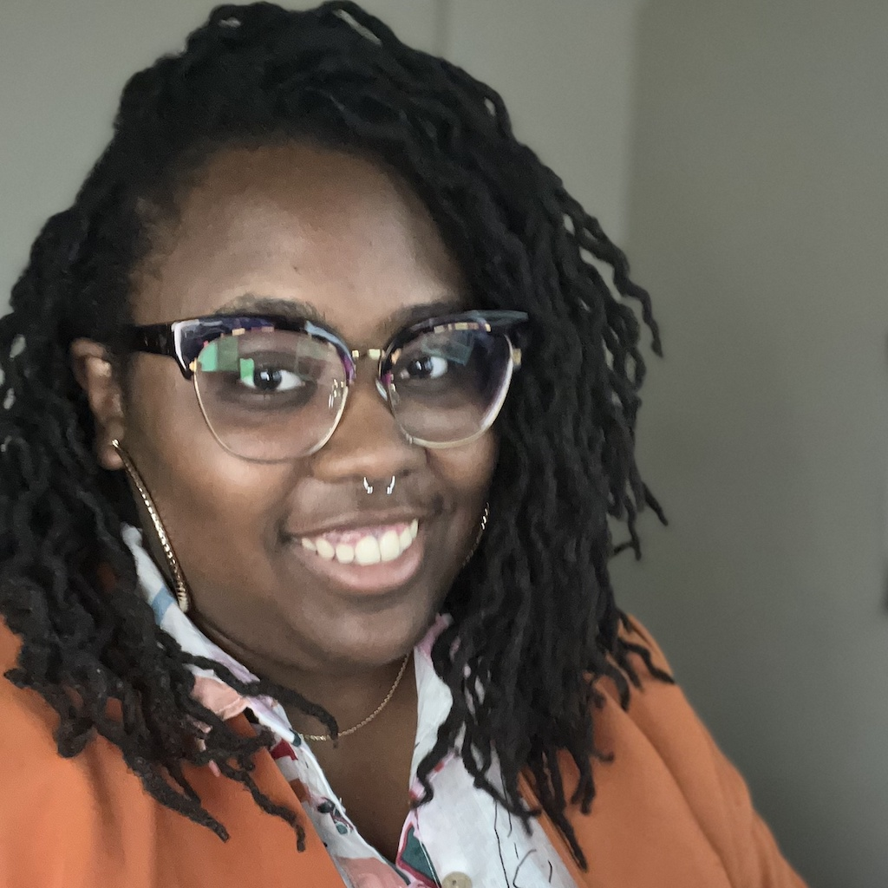

Emily Q. Wang

Emily is a PhD student in the Technology and Social Behavior program. Her research in human-computer
interaction focuses on creating accessible groupware systems for Deaf and hearing professionals. Before
coming to Northwestern, Emily completed a self-designed engineering major with coursework in computer
science, human-centered design, and psychology at Olin College of Engineering.
website
Kit Martin

Kit grew up in Sudan, a country in a civil war. From there he moved around a lot. These travels motivated
him to notice the gross disparities. This motivation got him started working with disadvantaged youth in
Nashville back in the ’90s and running a mentoring program in Upstate New York in the 2000s. This
motivation has taken him into simulation through agent based models, especially models dealing with social
systems that demonstrate the intersubjective development of inequality. Kit has an M.A. in international
development and experience working overseas implementing field projects in loan provision, agricultural
systems transformation and recycling efforts. Kit also has experience teaching biology, population dynamics
and computer programming through ant based models in schools in Nashville, Tennessee with Vanderbilt. Kit
is currently interested in multi-modal sensors. He sees them as a bridge between agent based methods and
his other evaluations frameworks.
Stephanie Jones

Stephanie is a Ph.D. Student in Computer Science and Learning Science from the Philadelphia area. She's a
graduate of Villanova University where she studied Computer and Electrical Engineering. She is interested
in increasing access to STEM for underrepresented youth through informal learning opportunities. She is
additionally interested in the intersections of socio-cultural theories, constructionism, and multi modal
analytics. When not doing research she can be found laughing at her own jokes, watching YouTube, or using
Slack reacts.
website
David Bar-El

Originally from Tel-Aviv, Israel and currently working on my PhD in Learning Sciences at Northwestern's
School of Education and Social Policy. I am interested in out of school learning and particularly how
children learn around popular culture and media.
Connor Bain

Connor is a Ph.D. student in Computer Science and Learning Sciences originally from Columbia, SC. He's a
proud University of South Carolina alumnus who studies how to help teachers integrate computation into
their classrooms and how to get students to think with computation.
Khalil Anderson

Born in Bronxville, New York and raised in Ellicott City, Maryland, Khalil, a UMBC Alum, is a Computer
Science PhD student with interests in Machine Learning. More specifically with interests in Reinforcement
Learning, NLP, and how Machine Learning can help augment, not necesarily replace, humans in task and jobs
such as driving, learning, manufacturing, and any other area.